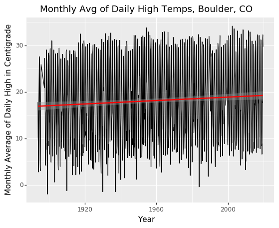

Big Data Exercises¶
In these exercises we will work on data from a series of global weather monitoring stations used to measure climate trends to examine long-term trends in temperature for your home locality. This data comes from the Global Historical Climatology Network, and is the actual raw data provided by NOAA. The only changes I have made to this data are a few small formatting changes to help meet the learning goals of this exercise.
To do these excercises, first please download the data for this exercise from here. Note this is a big file (this is a big-data exercise, after all), so be patient.
(1) The data we’ll be working with can be found in the file ghcnd_daily.tar.gz. It includes daily weather data from thousands of weather stations around the work over many decades.
Begin by unzipping the file and checking it’s size – it should come out to be about 4gb, but will expand to about 12 gb in RAM, which means there’s just no way most students (who usually have, at most, 16gb of RAM) can import this dataset into pandas and manipulate it directly.
(Note: what we’re doing can be applied to much bigger datasets, but they sometimes takes hours to work with, so we’re working with data that’s just a little big so we can get exercises done in reasonable time).
(2) Thankfully, we aren’t going to be working with all the data today. Instead, everyone should pick two weather stations to examine during this analysis (so each pair should pick 4 – different weather stations have different data availability, so by grabbing two each hopefully at least 1 will have a long time series available…).
To pick your stations, we’ll need to open the ghcnd-stations.txt file in the directory you’ve downloaded. It includes both station codes (which is what we’ll find in the ghcnd_daily.csv data, as well as the name and location of each station).
When picking a weather station, make sure to pick one flagged as being in either GSN, HCN, or CRN (these designate more formalized stations that have been around a long time, ensuring you’ll get a station with data that has been recorded over a longer period).
Note that Station IDs start with the two-letter code of the country in which they are located, and the “NAME” column often constains city names.
The ``ghcnd-stations.txt`` is a “fixed-width” dataset, meaning that instead of putting commas or tabs between observations, all columns have the same width (in terms of number of characters). So to import this data you’ll have to (a) read the notes about the data in the project README.txt, and (b) read about how to read in fixed-width data in pandas. When entering column specifications, remember that normal people count from 1 and include end points, while Python counts from 0 and doesn’t include end points (so if the readme says data is in columns 10-20, in Python that’d be 9 through 20).
[1]:
import pandas as pd
import os
os.chdir('/users/nick/downloads/global_climate_data')
[2]:
columns = [(0, 11),
(12, 20),
(21, 30),
(31, 37),
(38, 40),
(41, 71),
(72, 75),
(76, 79),
(80, 85)]
stations = pd.read_fwf('ghcnd-stations.txt',
colspecs=columns,
header=None,
names = ["ID", "LATITUDE", "LONGITUDE", "ELEVATION",
"STATE", "NAME", "GSN FLAG", "HCN/CRN FLAG",
"WMO ID"])
[3]:
stations.head()
stations = stations[stations['HCN/CRN FLAG'].isin(['HCN', "CRN"]) | stations['GSN FLAG'].isin(['GSN'])]
[4]:
stations.head()
[4]:
| ID | LATITUDE | LONGITUDE | ELEVATION | STATE | NAME | GSN FLAG | HCN/CRN FLAG | WMO ID | |
|---|---|---|---|---|---|---|---|---|---|
| 2 | AE000041196 | 25.3330 | 55.5170 | 34.0 | NaN | SHARJAH INTER. AIRP | GSN | NaN | 41196.0 |
| 6 | AF000040930 | 35.3170 | 69.0170 | 3366.0 | NaN | NORTH-SALANG | GSN | NaN | 40930.0 |
| 10 | AG000060390 | 36.7167 | 3.2500 | 24.0 | NaN | ALGER-DAR EL BEIDA | GSN | NaN | 60390.0 |
| 11 | AG000060590 | 30.5667 | 2.8667 | 397.0 | NaN | EL-GOLEA | GSN | NaN | 60590.0 |
| 12 | AG000060611 | 28.0500 | 9.6331 | 561.0 | NaN | IN-AMENAS | GSN | NaN | 60611.0 |
[5]:
stations[stations['ID'].str.contains("^IN")] # Let's do one from New Delhi
[5]:
| ID | LATITUDE | LONGITUDE | ELEVATION | STATE | NAME | GSN FLAG | HCN/CRN FLAG | WMO ID | |
|---|---|---|---|---|---|---|---|---|---|
| 35873 | IN001080500 | 17.450 | 78.470 | 527.0 | NaN | BEGUMPET OBSY | GSN | NaN | 43128.0 |
| 36198 | IN003041800 | 26.100 | 91.583 | 54.0 | NaN | GAUHATI | GSN | NaN | 42410.0 |
| 36402 | IN004091000 | 24.050 | 84.067 | 221.0 | NaN | DALTONGANJ | GSN | NaN | 42587.0 |
| 36607 | IN005030100 | 24.200 | 72.200 | 136.0 | NaN | DEESA | GSN | NaN | 42539.0 |
| 36670 | IN005090100 | 22.367 | 69.083 | 11.0 | NaN | DWARKA | GSN | NaN | 42731.0 |
| 36917 | IN007101600 | 31.100 | 77.167 | 2202.0 | NaN | SHIMLA | GSN | NaN | 42083.0 |
| 36926 | IN008010200 | 34.083 | 74.833 | 1587.0 | NaN | SRINAGAR | GSN | NaN | 42027.0 |
| 36980 | IN009010100 | 12.967 | 77.583 | 921.0 | NaN | BANGALORE | GSN | NaN | 43295.0 |
| 37477 | IN011020300 | 19.083 | 82.033 | 553.0 | NaN | JAGDALPUR | GSN | NaN | 43041.0 |
| 37513 | IN011060800 | 22.767 | 81.900 | 625.0 | NaN | PENDRA ROAD | GSN | NaN | 42779.0 |
| 37733 | IN011330900 | 23.850 | 78.750 | 551.0 | NaN | SAGAR | GSN | NaN | 42671.0 |
| 38003 | IN012190100 | 18.533 | 73.850 | 559.0 | NaN | POONA | GSN | NaN | 43063.0 |
| 38119 | IN014020800 | 25.250 | 91.733 | 1313.0 | NaN | CHERRAPUNJI | GSN | NaN | 42515.0 |
| 38451 | IN019070100 | 28.000 | 73.300 | 224.0 | NaN | BIKANER | GSN | NaN | 42165.0 |
| 38778 | IN020040900 | 13.000 | 80.183 | 16.0 | NaN | MADRAS/MINAMBAKKAM | GSN | NaN | 43279.0 |
| 38847 | IN020081000 | 10.233 | 77.467 | 2343.0 | NaN | KODAIKANAL | GSN | NaN | 43339.0 |
| 38879 | IN020100400 | 9.267 | 79.300 | 11.0 | NaN | PAMBAN | GSN | NaN | 43363.0 |
| 39039 | IN022021900 | 28.583 | 77.200 | 216.0 | NaN | NEW DELHI/SAFDARJUN | GSN | NaN | 42182.0 |
| 39414 | IN024050100 | 27.050 | 88.267 | 2128.0 | NaN | DARJEELING | GSN | NaN | 42295.0 |
| 39503 | IN025010100 | 8.300 | 73.000 | 2.0 | NaN | MINICOY OBSY | GSN | NaN | 43369.0 |
| 39512 | IN099999901 | 11.667 | 92.717 | 79.0 | NaN | PORT BLAIR | GSN | NaN | 43333.0 |
[6]:
# Let's do IN022021900. I used to live in Safdarjung Enclave in delhi!
# IN007101600
# and one from argentina
stations[stations['ID'].str.contains("^AR")]
[6]:
| ID | LATITUDE | LONGITUDE | ELEVATION | STATE | NAME | GSN FLAG | HCN/CRN FLAG | WMO ID | |
|---|---|---|---|---|---|---|---|---|---|
| 261 | AR000087007 | -22.100 | -65.600 | 3479.0 | NaN | LA QUIACA OBSERVATO | GSN | NaN | 87007.0 |
| 262 | AR000087065 | -24.167 | -62.900 | 205.0 | NaN | RIVADAVIA | GSN | NaN | 87065.0 |
| 263 | AR000087078 | -24.700 | -60.583 | 130.0 | NaN | LAS LOMITAS | GSN | NaN | 87078.0 |
| 265 | AR000087155 | -27.450 | -59.050 | 53.0 | NaN | RESISTENCIA AERO | GSN | NaN | 87155.0 |
| 266 | AR000087217 | -29.383 | -66.817 | 438.0 | NaN | LA RIOJA AERO. | GSN | NaN | 87217.0 |
| 267 | AR000087257 | -29.883 | -61.950 | 88.0 | NaN | CERES AERO | GSN | NaN | 87257.0 |
| 268 | AR000087270 | -29.183 | -59.700 | 53.0 | NaN | RECONQUISTA AERO | GSN | NaN | 87270.0 |
| 269 | AR000087344 | -31.317 | -64.217 | 489.0 | NaN | CORDOBA AERO | GSN | NaN | 87344.0 |
| 270 | AR000087374 | -31.783 | -60.483 | 74.0 | NaN | PARANA AERO | GSN | NaN | 87374.0 |
| 271 | AR000087418 | -32.833 | -68.783 | 704.0 | NaN | MENDOZA AERO | GSN | NaN | 87418.0 |
| 272 | AR000087534 | -34.133 | -63.367 | 137.0 | NaN | LABOULAYE AERO | GSN | NaN | 87534.0 |
| 273 | AR000087623 | -36.567 | -64.266 | 192.0 | NaN | SANTA ROSA AERO | GSN | NaN | 87623.0 |
| 274 | AR000087692 | -37.933 | -57.583 | 22.0 | NaN | MAR DEL PLATA AERO | GSN | NaN | 87692.0 |
| 275 | AR000087715 | -38.950 | -68.133 | 273.0 | NaN | NEUQUEN AERO | GSN | NaN | 87715.0 |
| 276 | AR000087803 | -42.933 | -71.150 | 799.0 | NaN | ESQUEL AERO | GSN | NaN | 87803.0 |
| 277 | AR000087828 | -43.200 | -65.266 | 43.0 | NaN | TRELEW AERO | GSN | NaN | 87828.0 |
| 278 | AR000087860 | -45.783 | -67.500 | 58.0 | NaN | COMODORO RIVADAVIA | GSN | NaN | 87860.0 |
| 279 | AR000087925 | -51.617 | -69.283 | 19.0 | NaN | RIO GALLEGOS AERO | GSN | NaN | 87925.0 |
| 280 | AR000870470 | -24.850 | -65.483 | 1246.0 | NaN | SALTA AERO | GSN | NaN | 87047.0 |
| 281 | AR000873050 | -30.250 | -68.750 | 1175.0 | NaN | JACHAL | GSN | NaN | 87305.0 |
| 282 | AR000875440 | -35.867 | -61.900 | 85.0 | NaN | PEHUAJO AERO | GSN | NaN | 87544.0 |
| 284 | AR000877500 | -38.733 | -62.167 | 75.0 | NaN | BAHIA BLANCA AERO | GSN | NaN | 87750.0 |
| 292 | ARM00087178 | -27.386 | -55.971 | 131.1 | NaN | POSADAS | GSN | NaN | 87178.0 |
| 296 | ARM00087289 | -29.689 | -57.152 | 70.1 | NaN | PASO DE LOS LIBRES | GSN | NaN | 87289.0 |
| 311 | ARM00087497 | -33.010 | -58.613 | 22.9 | NaN | GUALEGUAYCHU | GSN | NaN | 87497.0 |
| 312 | ARM00087506 | -35.494 | -69.574 | 1430.1 | NaN | MALARGUE | GSN | NaN | 87506.0 |
| 320 | ARM00087593 | -34.972 | -57.895 | 21.9 | NaN | LA PLATA | GSN | NaN | 87593.0 |
[7]:
# ARM00087593 (I also briefly lived in La Plata!)
# AR000087007
[8]:
stations[stations['ID'] == 'USC00050848']
[8]:
| ID | LATITUDE | LONGITUDE | ELEVATION | STATE | NAME | GSN FLAG | HCN/CRN FLAG | WMO ID | |
|---|---|---|---|---|---|---|---|---|---|
| 89825 | USC00050848 | 39.9919 | -105.2667 | 1671.5 | CO | BOULDER | NaN | HCN | NaN |
(3) Now that we something about the observations we want to work with, we can now turn to our actual weather data.
Our daily weather can be found in ghcnd_daily.csv, which you get by unzipping ghcnd_daily.tar.gz. Note that the README.txt talks about this being a fixed-width file. Since you’ve already dealt with one fixed-width file, I’ve just converted this to a CSV, and dropped all the data that isn’t “daily max temperatures”.
Let’s start with the fun part. SAVE YOUR NOTEBOOK AND ANY OTHER OPEN FILES!. Then just try and import the data (ghcnd_daily.csv) while watching your Activity Monitor (Mac) or Resource Monitor (Windows) to see what happens.
If you have 8GB of RAM, this should fail miserably.
If you have 16GB of RAM, you might just get away with this. But if it does load, try sorting the data by year and see how things go.
(If you have 32GB of RAM: you’re actually probably fine with data this size. Sorry – datasets big enough to cause big problems for people with 32GB take a long time to chunk on an 8GB computer, and these exercises have to be fast enough to finish in a class period! There are some exercises at the bottom with a REALLY big dataset you can work with.)
You may have to kill your kernel, kill Jupyter Lab, and start over when this explodes…
(4) Now that we know that we can’t work with this directly, it’s good with these big datasets to just import ~200 lines so you can get a feel for the data. So load just 200 lines of ghcnd_daily.csv.
[9]:
df = pd.read_csv('/users/nick/dropbox/MIDS_Data_Prep'
'/ClimateData/ghcnd_daily.csv',
nrows=100)
[10]:
df.head()
[10]:
| id | year | month | element | value1 | mflag1 | qflag1 | sflag1 | value2 | mflag2 | ... | qflag29 | sflag29 | value30 | mflag30 | qflag30 | sflag30 | value31 | mflag31 | qflag31 | sflag31 | |
|---|---|---|---|---|---|---|---|---|---|---|---|---|---|---|---|---|---|---|---|---|---|
| 0 | ACW00011604 | 1949 | 1 | TMAX | 289 | NaN | NaN | X | 289 | NaN | ... | NaN | X | 272 | NaN | NaN | X | 272 | NaN | NaN | X |
| 1 | ACW00011604 | 1949 | 2 | TMAX | 267 | NaN | NaN | X | 278 | NaN | ... | NaN | NaN | -9999 | NaN | NaN | NaN | -9999 | NaN | NaN | NaN |
| 2 | ACW00011604 | 1949 | 3 | TMAX | 272 | NaN | NaN | X | 289 | NaN | ... | NaN | X | 278 | NaN | NaN | X | 267 | NaN | NaN | X |
| 3 | ACW00011604 | 1949 | 4 | TMAX | 278 | NaN | NaN | X | 283 | NaN | ... | NaN | X | 289 | NaN | NaN | X | -9999 | NaN | NaN | NaN |
| 4 | ACW00011604 | 1949 | 5 | TMAX | 283 | NaN | NaN | X | 283 | NaN | ... | NaN | X | 294 | NaN | NaN | X | 300 | NaN | NaN | X |
5 rows × 128 columns
(5) Once you have a sense of the data, write code to chunk your data: i.e. code that reads in all blocks of the data that will fit in ram, keeps only the observations for the weather stations you’ve selected to focus on, and throws away everything else.
In addition to your own 4 weather stations, please also include station USC00050848 (a weather station from near my home!) so you can generate results that we can all compare (to check for accuracy).
Note you will probably have to play with your chunk sizes (probably while watching your RAM usage?) to find a chunk size that’s big enough you aren’t running chunks all day, but small enough you can work with it.
[11]:
my_stations = ['USC00050848', 'IN007101600', 'IN022021900', 'ARM00087593', 'AR000087007']
# Setup chunking load
df_full = pd.read_csv('/users/nick/dropbox/MIDS_Data_Prep'
'/ClimateData/ghcnd_daily.csv',
iterator=True,
chunksize=5000000)
[12]:
# OK,small enough for me, but not ridiculously small.
keeping = list()
for idx, d in enumerate(df_full):
print(f'starting chunk {idx}')
d = d[d['id'].isin(my_stations)]
keeping.append(d)
/Users/Nick/miniconda3/lib/python3.7/site-packages/IPython/core/interactiveshell.py:3058: DtypeWarning: Columns (6,10,14,18,22,26,30,34,38,42,46,50,54,58,62,66,70,74,78,82,86,90,94,98,102,106,110,114,118,122,126) have mixed types. Specify dtype option on import or set low_memory=False.
interactivity=interactivity, compiler=compiler, result=result)
starting chunk 0
/Users/Nick/miniconda3/lib/python3.7/site-packages/IPython/core/interactiveshell.py:3058: DtypeWarning: Columns (6,7,10,11,14,15,18,19,22,23,26,27,30,31,34,35,38,39,42,43,46,47,50,51,54,55,58,59,62,63,66,67,70,71,74,75,78,79,82,83,86,87,90,91,94,95,98,99,102,103,106,107,110,111,114,115,118,119,122,123,126,127) have mixed types. Specify dtype option on import or set low_memory=False.
interactivity=interactivity, compiler=compiler, result=result)
starting chunk 1
/Users/Nick/miniconda3/lib/python3.7/site-packages/IPython/core/interactiveshell.py:3058: DtypeWarning: Columns (5,6,7,9,10,11,13,14,15,17,18,19,21,22,23,25,26,27,29,30,31,33,34,35,37,38,39,41,42,43,45,46,47,49,50,51,53,54,55,57,58,59,61,62,63,65,66,67,69,70,71,73,74,75,77,78,79,81,82,83,85,86,87,89,90,91,93,94,95,97,98,99,101,102,103,105,106,107,109,110,111,113,114,115,117,118,119,121,122,123,125,126,127) have mixed types. Specify dtype option on import or set low_memory=False.
interactivity=interactivity, compiler=compiler, result=result)
starting chunk 2
[13]:
weather_data = pd.concat(keeping)
del keeping
[14]:
weather_data.head()
[14]:
| id | year | month | element | value1 | mflag1 | qflag1 | sflag1 | value2 | mflag2 | ... | qflag29 | sflag29 | value30 | mflag30 | qflag30 | sflag30 | value31 | mflag31 | qflag31 | sflag31 | |
|---|---|---|---|---|---|---|---|---|---|---|---|---|---|---|---|---|---|---|---|---|---|
| 58411 | AR000087007 | 1956 | 4 | TMAX | 230 | NaN | NaN | G | 242 | NaN | ... | NaN | G | 171 | NaN | NaN | G | -9999 | NaN | NaN | NaN |
| 58412 | AR000087007 | 1956 | 5 | TMAX | 180 | NaN | NaN | G | 172 | NaN | ... | NaN | G | 138 | NaN | NaN | G | 148 | NaN | NaN | G |
| 58413 | AR000087007 | 1956 | 6 | TMAX | 156 | NaN | NaN | G | 136 | NaN | ... | NaN | G | 138 | NaN | NaN | G | -9999 | NaN | NaN | NaN |
| 58414 | AR000087007 | 1956 | 7 | TMAX | 132 | NaN | NaN | G | 136 | NaN | ... | NaN | G | 128 | NaN | NaN | G | 128 | NaN | NaN | G |
| 58415 | AR000087007 | 1956 | 8 | TMAX | 138 | NaN | NaN | G | 138 | NaN | ... | NaN | G | 158 | NaN | NaN | G | 164 | NaN | NaN | G |
5 rows × 128 columns
(6) Now, for each weather station, figure out the earliest year with data. Keep USC00050848 and the one weather station for each member of your team with the best data (i.e. each member of your pair should have picked two weather stations: keep the one from each pair with the best data).
[15]:
for name in weather_data.id.unique():
min_year = weather_data.loc[weather_data.id == name, 'year'].min()
print(f' for {name}, earliest year is {min_year}')
for AR000087007, earliest year is 1956
for ARM00087593, earliest year is 1974
for IN007101600, earliest year is 1973
for IN022021900, earliest year is 1944
for USC00050848, earliest year is 1893
[16]:
weather_data = weather_data[weather_data.id.isin(['USC00050848', 'IN022021900', 'AR000087007'])].copy()
weather_data.head()
[16]:
| id | year | month | element | value1 | mflag1 | qflag1 | sflag1 | value2 | mflag2 | ... | qflag29 | sflag29 | value30 | mflag30 | qflag30 | sflag30 | value31 | mflag31 | qflag31 | sflag31 | |
|---|---|---|---|---|---|---|---|---|---|---|---|---|---|---|---|---|---|---|---|---|---|
| 58411 | AR000087007 | 1956 | 4 | TMAX | 230 | NaN | NaN | G | 242 | NaN | ... | NaN | G | 171 | NaN | NaN | G | -9999 | NaN | NaN | NaN |
| 58412 | AR000087007 | 1956 | 5 | TMAX | 180 | NaN | NaN | G | 172 | NaN | ... | NaN | G | 138 | NaN | NaN | G | 148 | NaN | NaN | G |
| 58413 | AR000087007 | 1956 | 6 | TMAX | 156 | NaN | NaN | G | 136 | NaN | ... | NaN | G | 138 | NaN | NaN | G | -9999 | NaN | NaN | NaN |
| 58414 | AR000087007 | 1956 | 7 | TMAX | 132 | NaN | NaN | G | 136 | NaN | ... | NaN | G | 128 | NaN | NaN | G | 128 | NaN | NaN | G |
| 58415 | AR000087007 | 1956 | 8 | TMAX | 138 | NaN | NaN | G | 138 | NaN | ... | NaN | G | 158 | NaN | NaN | G | 164 | NaN | NaN | G |
5 rows × 128 columns
(7) Now calculate the average max temp for each weather station / month in the data. Note that in a few weeks, we’ll have the skills to do this by reshaping our data so each row is a single day, rather than a month. But for the moment, just sum the columns, watching out for weird values.
To sum across the value columns, we can combine:
weather_data.filter(like='value')
(to just get the columns whose names start with “value”) with .mean(axis='columns') (which averages across columns (along rows) rather than the usual averaging across rows (along columns).
[17]:
weather_data['value1'].value_counts()
[17]:
-9999 150
189 39
300 39
200 39
128 38
...
362 1
249 1
381 1
255 1
404 1
Name: value1, Length: 336, dtype: int64
[18]:
# First get rid of garbarge entries.
import numpy as np
for i in range(1, 32):
weather_data[f'value{i}'] = weather_data[f'value{i}'].replace(-9999, np.nan)
weather_data['avg'] = weather_data.filter(like='value').mean(axis='columns')
weather_data['avg_C'] = weather_data['avg'] / 10
(6) Now for each weather station, generate a separate plot of the daily temperatures over time. You should end up with a plot that looks something like this:

[19]:
from plotnine import *
weather_data['date'] = weather_data['year'] + (weather_data['month']-1) / 12
names = {'USC00050848': "Boulder, CO",
'IN022021900': 'Safdarjung, New Delhi, India',
'AR000087007': 'Jujuy, Argentina'
}
for station in weather_data.id.unique():
g = (ggplot(weather_data[weather_data.id == station], aes(x='date', y='avg_C'))
+ geom_line()
+ geom_smooth(method='lm', color='red')
+ labs(title = f"Monthly Avg of Daily High Temps, {names[station]}",
x = "Year",
y = "Monthly Average of Daily High in Centigrade")
)
name_no_comma = names[station].replace(", ", "_").replace(" ", "_")
print(name_no_comma)
g.save(f'/users/nick/github/practicaldatascience/source/images/temp_plots_{name_no_comma}.png')
print(g)
Jujuy_Argentina
/Users/Nick/miniconda3/lib/python3.7/site-packages/plotnine/ggplot.py:729: PlotnineWarning: Saving 6.4 x 4.8 in image.
from_inches(height, units), units), PlotnineWarning)
/Users/Nick/miniconda3/lib/python3.7/site-packages/plotnine/ggplot.py:730: PlotnineWarning: Filename: /users/nick/github/practicaldatascience/source/images/temp_plots_Jujuy_Argentina.png
warn('Filename: {}'.format(filename), PlotnineWarning)
/Users/Nick/miniconda3/lib/python3.7/site-packages/numpy/core/fromnumeric.py:2495: FutureWarning: Method .ptp is deprecated and will be removed in a future version. Use numpy.ptp instead.
return ptp(axis=axis, out=out, **kwargs)
/Users/Nick/miniconda3/lib/python3.7/site-packages/numpy/core/fromnumeric.py:2495: FutureWarning: Method .ptp is deprecated and will be removed in a future version. Use numpy.ptp instead.
return ptp(axis=axis, out=out, **kwargs)
<Figure size 640x480 with 1 Axes>
/Users/Nick/miniconda3/lib/python3.7/site-packages/plotnine/ggplot.py:729: PlotnineWarning: Saving 6.4 x 4.8 in image.
from_inches(height, units), units), PlotnineWarning)
/Users/Nick/miniconda3/lib/python3.7/site-packages/plotnine/ggplot.py:730: PlotnineWarning: Filename: /users/nick/github/practicaldatascience/source/images/temp_plots_Safdarjung_New_Delhi_India.png
warn('Filename: {}'.format(filename), PlotnineWarning)
/Users/Nick/miniconda3/lib/python3.7/site-packages/numpy/core/fromnumeric.py:2495: FutureWarning: Method .ptp is deprecated and will be removed in a future version. Use numpy.ptp instead.
return ptp(axis=axis, out=out, **kwargs)
<ggplot: (8790525242737)>
Safdarjung_New_Delhi_India
/Users/Nick/miniconda3/lib/python3.7/site-packages/numpy/core/fromnumeric.py:2495: FutureWarning: Method .ptp is deprecated and will be removed in a future version. Use numpy.ptp instead.
return ptp(axis=axis, out=out, **kwargs)
<Figure size 640x480 with 1 Axes>
/Users/Nick/miniconda3/lib/python3.7/site-packages/plotnine/ggplot.py:729: PlotnineWarning: Saving 6.4 x 4.8 in image.
from_inches(height, units), units), PlotnineWarning)
/Users/Nick/miniconda3/lib/python3.7/site-packages/plotnine/ggplot.py:730: PlotnineWarning: Filename: /users/nick/github/practicaldatascience/source/images/temp_plots_Boulder_CO.png
warn('Filename: {}'.format(filename), PlotnineWarning)
/Users/Nick/miniconda3/lib/python3.7/site-packages/numpy/core/fromnumeric.py:2495: FutureWarning: Method .ptp is deprecated and will be removed in a future version. Use numpy.ptp instead.
return ptp(axis=axis, out=out, **kwargs)
<ggplot: (8790490358045)>
Boulder_CO
/Users/Nick/miniconda3/lib/python3.7/site-packages/numpy/core/fromnumeric.py:2495: FutureWarning: Method .ptp is deprecated and will be removed in a future version. Use numpy.ptp instead.
return ptp(axis=axis, out=out, **kwargs)
<Figure size 640x480 with 1 Axes>
<ggplot: (-9223363246329102469)>
Want More Practice?¶
If you really want a challenge, the file ghcnd_daily_30gb.tar.gz will decompress into ghcnd_daily.dat, the full version of the GHCND daily data. It contains not only daily high temps, but also daily low temps, preciptionation, etc. Moreover, it is still in fixed-width format, and is about 30gb in raw form.
Importing and chunking this data (with moderate optimizations) took about 2 hours on my computer.
If you’re up for it, it’s a great dataset to wrestling with data in weird formats and chunking.
Pro-tip: strings take up way more space in RAM than numbers, so some columns can be converted to keep the memory footprint of the data down.